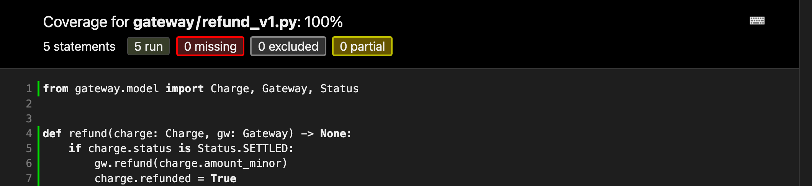
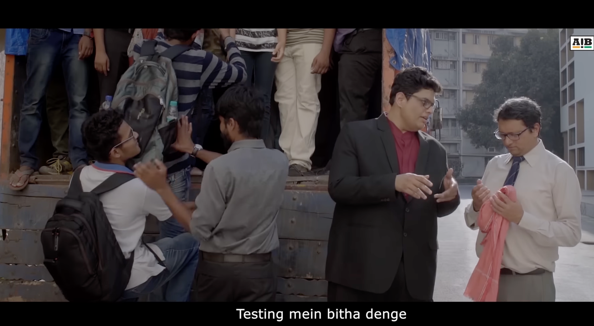
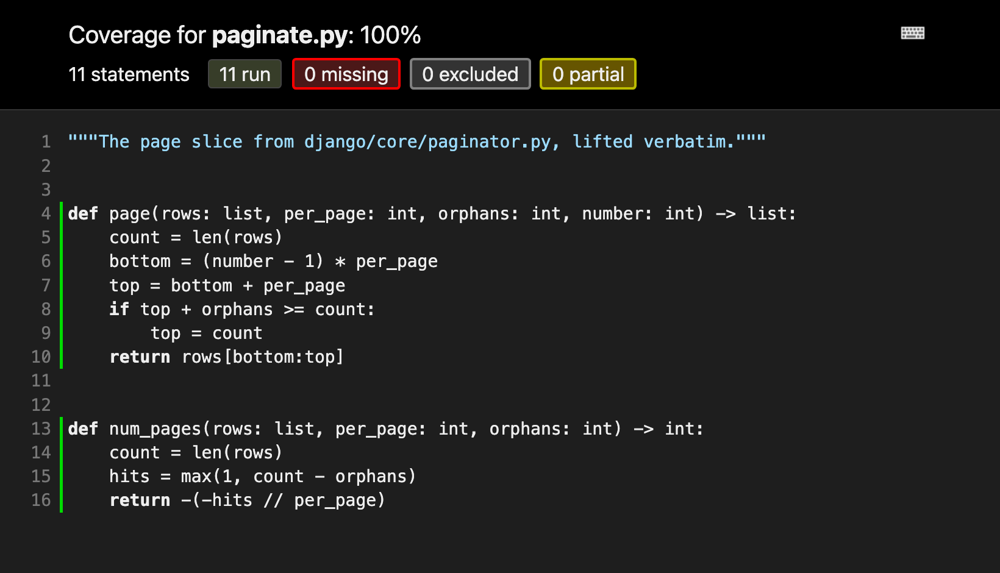

capture → settlement is T+1. Today we only refund what has settled.

Settlement lags capture by a day, so a customer who cancels that afternoon is CAPTURED, not SETTLED, and support cannot refund them.
if charge.status is Status.SETTLED:
gw.refund(charge.amount_minor)
charge.refunded = True
elif charge.status is Status.CAPTURED: # the ticket
gw.refund(charge.amount_minor)
charge.refunded = True
def test_refunds_a_settled_charge():
c = Charge(1, Status.SETTLED, 24900)
gw = Gateway()
refund(c, gw)
assert gw.refunds == [24900]
def test_refunds_a_captured_charge(): c = Charge(3, Status.CAPTURED, 24900) gw = Gateway() refund(c, gw) assert gw.refunds == [24900]
Nine seconds of work. The build is green. Ship it.
The gateway call for a refund times out. The job
retries it. Nothing in refund()
remembers that the first one already went through.
We are losing money. Patch it tonight.
def refund(charge, gw) -> None:
if charge.refunded: # the patch
return
if charge.status in REFUNDABLE:
gw.refund(charge.amount_minor)
charge.refunded = True
def test_refunding_twice_refunds_once():
c = Charge(4, Status.SETTLED, 24900)
gw = Gateway()
refund(c, gw)
refund(c, gw)
assert gw.refunds == [24900]
Idempotent now. Incident closed. Properly fixed.

Testing will not catch this one.
| who | step | (r, p) |
|---|---|---|
| A | read flag → false | (false, 0) |
| A | gw.refund() | (false, 1) |
| A | 504, exception | raises |
| A | refunded = True | never runs |
| retry | read flag → false | (false, 1) |
| retry | gw.refund() | (false, 2) |
| who | step | (r, p) |
|---|---|---|
| A | read flag → false | (false, 0) |
| B | read flag → false | (false, 0) |
| A | gw.refund() | (false, 1) |
| B | gw.refund() | (false, 2) |
| A | refunded = True | (true, 2) |
| B | refunded = True | (true, 2) |
Both pass through
(false, 1), money gone, flag still down.
The guard reads the flag, so it waves both of them through.
A test has to pick an interleaving, and there are exponentially many. So pick none. Instead prove that every single step keeps one sentence true.
If it holds at the start, and no step can break it, it holds in every reachable state, under every interleaving, including the ones you never thought of.
The goal itself hands you the bug, and every other route to it you never imagined.
def cas (s : St) : St := if s.refunded then s else ⟨true, s.payouts + 1⟩ theorem cas_preserves : Agree s → Agree (cas s) theorem cas_safe (n : Nat) : Safe (run n ⟨false, 0⟩)
claimed = (Charge.objects
.filter(id=cid, refunded=False)
.update(refunded=True))
if claimed == 0:
raise AlreadyRefunded
gw.refund(charge.amount_minor)
One SQL statement is one atomic step, so the model
has one too. Read the flag and write it in the same move, and
(false, 1) stops being reachable,
for any number of workers, in any order.
If the mathematics is this good, why are any of us still writing tests?
Well… because…
And if the proof goes through on your machine, it is a proof. Not probably. Not mostly. The checker does not care who wrote it, or whether they understood it.
That is not true of generated code. Generated code needs a reviewer. A generated proof arrives already reviewed, by a program that cannot be talked round.
The steep part used to be producing the proof. That is what took years to learn, and it is the part you now hand over.
What is left is not easier. It is different.
The skill is not writing the proof. *
* at scale, proof size and token cost matter again. This is about the first step.
| rfnd_8821 | acc_42 | 249.00 | settled |
| rfnd_8822 | acc_17 | 899.00 | settled |
| rfnd_8823 | acc_91 | 120.00 | settled |
| rfnd_8824 | acc_08 | 1,499.00 | settled |
| rfnd_8825 | acc_63 | 75.00 | settled |
Twenty-three rows, five to a page. Something has to decide which rows land on which page, and that something is a handful of lines in Django.
The code that decides which rows land on which page, and the suite that covers it.

Fair. I mutated those lines nine ways: off-by-ones,
flipped comparisons, a dropped orphans.
Every one was caught. The suite is good.
Then I read the rest of the file:
if self.per_page <= self.orphans:
# RemovedInDjango70Warning: ... replace with:
# raise ValueError(
# "The orphans argument cannot be larger than or "
# "equal to the per_page argument."
# )
Django shipped that for years before anyone wrote the precondition down.
Paginator(rows, per_page=2, orphans=20) 22 rows → 1 page of 22
Paginator(rows, per_page=2, orphans=20) ValueError: orphans cannot be larger than or equal to per_page
theorem page_bounded (hk : 0 < k) (ho : o < k) (l : List α) : ∀ p ∈ pages k o hk l, p.length < 2 * k
Not your views. Not your templates. Not your ORM. Not the two million lines you inherited and cannot change.
A gateway that retries. A client that parses your JSON. A queue that delivers twice. That is where the contract lives, and it is small.
Every property on the last few slides can be checked without proving anything at all.
@given(st.lists(st.integers()), st.integers(min_value=1))
def test_pages_partition(rows, per_page):
assert flatten(paginate(rows, per_page)) == rows
They make you write the contract down. They do not make you discharge it. Most of the value, a fraction of the price, and you can do it this afternoon.
A proof guarantees one thing: the code matches the spec.
All I am saying is that the price moved, and the economics are now on your side.
LGTM is a vote. A theorem is a receipt.
Special thanks to
Anirudh Gupta, IISc Bangalore for the initial idea of verifying
across boundaries and
Prof. KC Sivaramakrishnan and Prof. Kartik Nagar for … well
everything about Formal Verification.
Every tool in this talk is free software. Python · coverage.py · Hypothesis · Lean 4 · Django